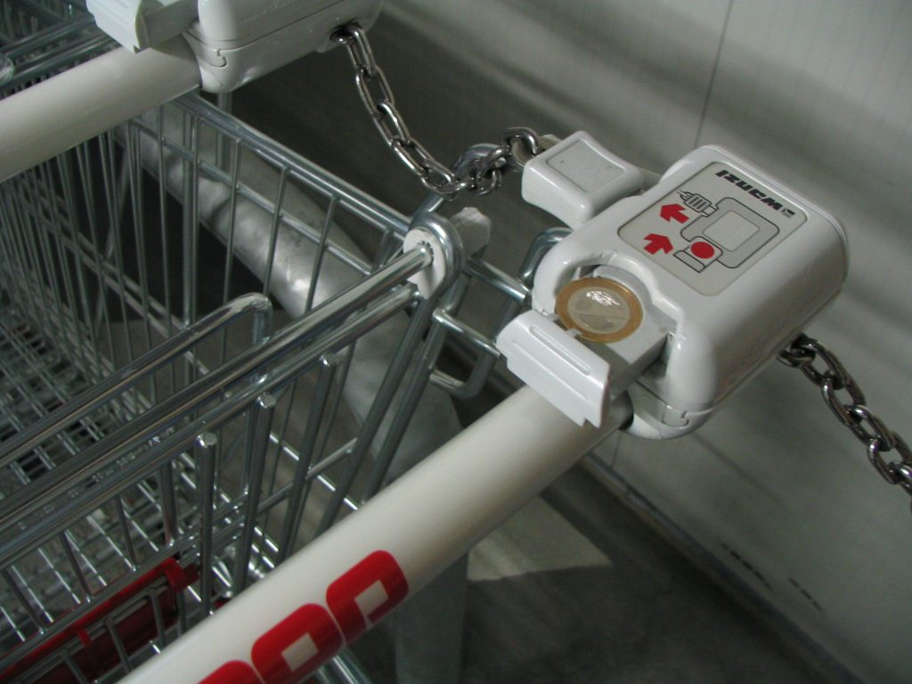

Photo by Francesca Tosolini
While alimentari are great for satisfying your hunger and picking up a few items, there are times when nothing but a supermarket will do. In big supermarkets, you often need a Euro coin deposit to unlock the cart (carrello) from the rack. The coin is given back once you put the cart away. So, make sure you always have a few coins with you! {This is an excerpt from chapter 5 “Stores” of the eBook “Italy from the Inside. A native Italian reveals the secrets of traveling in Italy”. To buy our eBook click here}